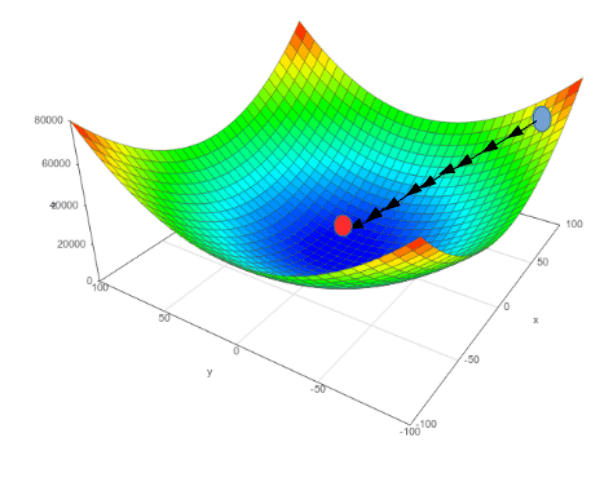
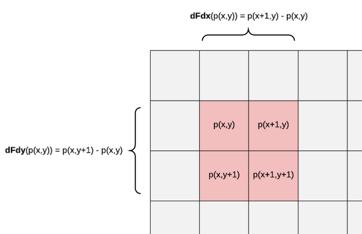
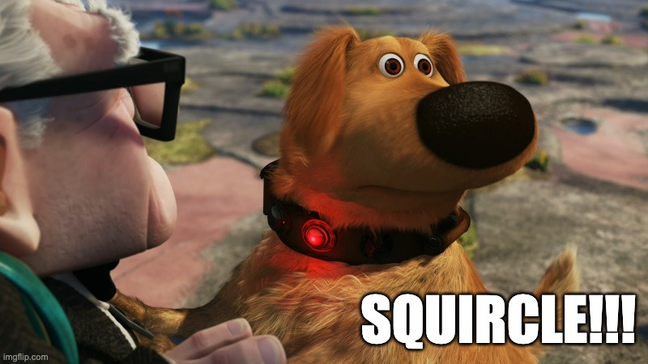

Manhattan Gradient Descent for Curves
Manhattan Gradient Descent for Curves
f = A*x + B*y + C; f=0?
f = x*x + y*y - 1; // Circle. f = k*k*k - l*m; // Cubic bezier. f = ...; // f can be any function. f=0?f=0, we use gradient descent as proposed by Loop & Blinn.
However, instead of using the Euclidian length of the gradient, we use the
Manhattan length.// For AA, one iteration of gradient descent is sufficient.
d = f / (abs(gradF.x) + abs(gradF.y));
coverage = saturate(.5 - d);
|
 |
Hardware Derivatives
|  |
// Assume ieee behavior when fwidth(f) == 0. // Assume saturate() carefully handles Inf and NaN. f= ...; coverage = saturate(.5 - f/fwidth(f)); |
Demo
Scary-smooth Manhattan AA with hardware derivatives. Mouse over to zoom. Drag to tilt in perspective.

Actual footage of me at work ☝